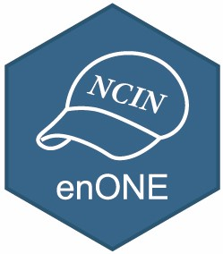

enONE 
enONE is an R package for performing spike-in based normalization on NAD-capped RNA sequencing data, as well as comparing and ranking the performance of different normalization strategies. enONE also provides a toolkit to handle NAD-RNA sequencing data.
Installation
You can install the development version of enONE from GitHub with:
# install.packages("devtools")
devtools::install_github("thereallda/enONE")Tutorial can be found at https://thereallda.github.io/enONE/
If you use
enONEfor your analysis, please cite the publication:Epitranscriptome analysis of NAD-capped RNA by spike-in-based normalization and prediction of chronological age (https://doi.org/10.1016/j.isci.2023.108558)